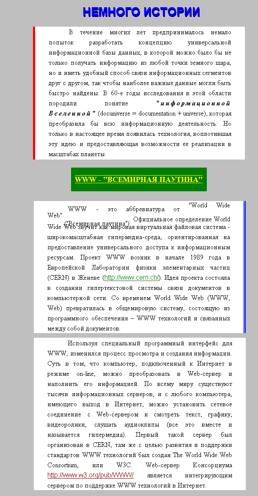

Лабораторные задания по курсу "Интернет-технологии"
Используя описанные команды создайте стиль следующего вида:
Для команды
задайтеУстановите в данном тексте цвет непосещенноых гиперссылок - коричневый, посещенных - зеленый, стиль шрифта - Arial.
Абзацы: на белом фоне. У первого абзаца - вертикальная одинарная красная
черта слева; у второго абзаца - вертикальная двойная синяя черта справа;у третьего абзаца никаких линий нет.
Текст абзацев идет с отступом от края белого фона, с увеличенным интервалом
между строками и с заданием "красной строки".
В первом заголовке получите объемный эффект. Для этого:
В первом абзаце слова "информационной Вселенной" идут жирным курсивом и
с разрядкой.
Второй заголовок: желтого цвета на зеленом фоне, причем фон лишь немного
шире заголовка, но уже основного текста.
Буквы заголовка подчеркнуты и надчеркнуты.
Во втором абзаце, в первом предложении часть слов расположена выше основного текста, а часть слов - ниже. Это должно быть сделано не средствами CSS.
Это должно выглядеть так:
